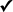

| XHTML Tag | Semantisch | Inline | Erklärung |
|---|---|---|---|
| <a></a> |  | Verweis (Hyperlink) und Anker für Verweise | |
| <abbr></abbr> | Abkürzung | ||
| <acronym></acronym> | Akronym | ||
| <address></address> | Kontaktangabe zum Autor eines Inhalts (Credits) | ||
| <area /> | Verweis-sensitiver Bereich in einer Image-Map-Grafik | ||
| <b></b> | Stilistische Hervorhebung im Text (üblicherweise fett dargestellt) | ||
| <base /> | Basis-URL für Referenzen | ||
| <bdo></bdo> | Richtungsänderung bei bidirektionalem Text | ||
| <big></big> | Großschrift | ||
| <blockquote></blockquote> | Zitat in Form eines eigenen Textabsatzes | ||
| <body></body> | Inhaltsbereich eines HTML-Dokuments | ||
| <br /> | Erzwungener Zeilenumbruch an der betreffenden Stelle | ||
| <button></button> | Schaltfläche in einem Formular | ||
| <caption></caption> | Tabellenüberschrift / -unterschrift | ||
| <cite></cite> | Zitat innerhalb eines Absatzes | ||
| <code></code> | Quelltext-Auszug innerhalb eines Absatzes | ||
| <col /> | Tabellenspalte | ||
| <colgroup></colgroup> | Gruppe von Tabellenspalten | ||
| <dd></dd> | Definition, Beschreibung, detaillierter Inhalt zu einem dt-Element | ||
| <del></del>< | gelöschter Inhalt (Änderungsmarkierung) | ||
| <dfn></dfn> | Definition innerhalb eines Absatzes | ||
| <div></div> | Allgemeiner Bereich | ||
| <dl></dl> | Liste mit dt- und dd-Elementen, für Definitionslisten, Dialoge usw. | ||
| <dt></dt> | Zu definierender Ausdruck in einer Definitionsliste, Sprechername in einem Dialog usw. | ||
| <em></em> | emphatischer Ausdruck innerhalb eines Absatzes (z.B. überspitzte Formulierung) | ||
| <fieldset></fieldset> | Gruppe von Elementen in einem Formular, Reiter in einem Dialog | ||
| <form></form> | Formular, Dialog | ||
| <h1-h6></h1-h6> | Überschrift 1. bis 6. Ordnung | ||
| <head></head> | Kopfbereich eines HTML-Dokuments | ||
| <hr /> | trennlinie | ||
| <html></html> | Dokumentelement von HTML-Dokumenten, schließt das gesamte Dokument ein | ||
| <i></i> | spezieller Ausdruck im Text, z.B. Fachterminus oder Idiom (üblicherweise kursiv dargestellt) | ||
| <img /> | Referenzierte und eingebettete Grafik | ||
| <input /> | Formularelement, verwendbar für diverse Typen wie Eingabefelder, Schaltflächen, Auswahlfelder usw. | ||
| <ins></ins> | Eingefügter Inhalt (Änderungsmarkierung) | ||
| <kbd></kbd> | Darstellung eines über Tastatur einzugebenden Textes im Text | ||
| <label></label> | Beschriftungstext eines Formularfeldes | ||
| <legend></legend> | Überschrift für eine fieldset-Gruppe von Elementen in einem Formular | ||
| <li></li> | Listenpunkt in einer ul-, ol- oder menu-Liste | ||
| <link /> | Logische Beziehungen der aktuellen Webseite zu anderen Webseiten | ||
| <map></map> | Bereich für verweis-sensitive Grafiken | ||
| <meta /> | Meta-Angabe für nicht im Inhalt sichtbare Dokumentinformationen oder für Anweisungen an den Webserver | ||
| <noscript></noscript> | Bereich für Inhalte, die angezeigt werden, wenn JavaScript im Browser deaktiviert oder nicht verfügbar ist | ||
| <object></object> | Eingebettetes Objekt, geeignet für spezielle Multimedia-Objekte, Java-Applets usw. | ||
| <ol></ol> | Geordnete (z.B. nummerierte) Liste | ||
| <optgroup></optgroup> | Gruppe von Auswahlmöglichkeiten in einer Auswahlliste | ||
| <option></option> | Auswahlmöglichkeit in einer Auswahlliste | ||
| <p></p> | Paragraph, Absatz | ||
| <param /> | Parameter eines Objekts bei object-Element | ||
| <pre></pre> | Präformatierter Text (alle Whitespace-Zeichen werden im Browser so dargestellt wie im Text enthalten) | ||
| <q></q> | Wörtliche Rede in einem Text | ||
| <samp></samp> | Beispieltext in einem dokumentierenden Text | ||
| <script></script> | Scriptbereich für JavaScript und andere Scriptsprachen | ||
| <select></select> | Auswahlliste in einem Formular | ||
| <small></small> | kleiner dargestellter Text als Normalschrift | ||
| <span></span> | allgemeiner Bereich innerhalb eines Absatzes | ||
| <strong></strong> | stark betonter Inhalt im Text | ||
| <style></style> | Bereich für Stylesheet-Definitionen, z.B. in CSS | ||
| <sub></sub> | Tiefgestellter Text | ||
| <sup></sup> | Hochgestellter Text | ||
| <table></table> | Tabelle | ||
| <tbody></tbody> | Tabellenkörper mit den eigentlichen Daten | ||
| <td></td> | Tabellenzelle | ||
| <textarea></textarea> | Mehrzeiliger Eingabebereich in einem Formular | ||
| <tfoot></tfoot> | Fußbereich in einer Tabelle, z.B. für summarische Daten | ||
| <th></th> | Tabellenkopfzelle | ||
| <thead></thead> | Kopfbereich einer Tabelle | ||
| <title></title> | Titel eines HTML-Dokuments | ||
| <tr></tr> | Tabellenzeile | ||
| <tt></tt> | »Fernschreiber«-Text | ||
| <ul></ul> | Unsortierte Liste (Aufzählungsliste) | ||
| <var></var> | Variabler Name in einem dokumentierenden Text |
©Konrad Banyś, 2013-2014